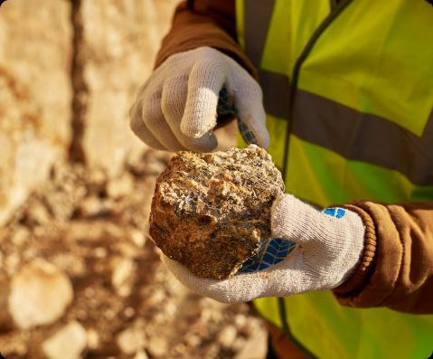

- Göstərilən xidmət və görülən işlər prosesinin bütün mərhələlərində mümkün olan uyğunsuzluq və iddiaların qarşısını alaraq, müştərilərin real və artan tələbatlarını təmin etməyə daima cəhd göstərmək;
- Həmişə və istənilən vəziyyətdə keyfiyyət, peşə təhlükəsizliyi və ekologiya standartlarının tələblərinə uyğun olmaq üçün daimi və davamlı təlim, təhsil və təcrübəni artırmaq;
- Uyğunsuzluqların qarşısının alınması üzrə aktiv iş aparmaq, habelə, meydana çıxmış uyğunsuzluqların aradan qaldırılması məqsədilə yenidən aparılan işlərə hazır olmaq;
- Qəbul edilmiş vəzifə və işlərin effektiv icrası, habelə, sifarişçilərin tələblərininin məmnunluğu üçün idarəetmə sisteminin effektiv istifadəsi məqsədilə müəssisəni ixtisaslı personalla və təlim artırma prosesilə təmin etmək;